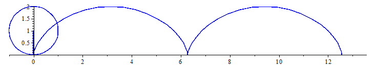

Cycloid
Warning!
Website is currently under development.A cycloid is the curve traced by a point on the rim of a circular wheel as the wheel rolls along a straight line. It is an example of a roulette, a curve generated by a curve rolling on another curve.
The cycloid is the solution to the brachistochrone problem (i.e., it is the curve of fastest descent under gravity) and the related tautochrone problem (i.e., the period of an object in descent without friction inside this curve does not depend on the object's starting position).

A cycloid generated by a rolling circle
Equations
The cycloid through the origin, generated by a circle of radius $r$ , consists of the points $(x, y)$, with
\begin{align} \ x = r (t - \sin(t)) \\ \ y = r (1 - \cos(t)) \\ \end{align}
Area
One arch of a cycloid generated by a circle of radius $r$ can be parameterized by
\begin{align} \ x = r (t - \sin(t)) \\ \ y = r (1 - \cos(t)) \\ \end{align}
with
\begin{align} \ 0 \leq t \leq 2\pi \\ \end{align}
since
\begin{align} \ \frac{\mathrm{d}x}{\mathrm{d}t} = r(1-cos(t)) \\ \end{align}
the area under the arch is
\begin{align} \ A = \int_{t=0}^{t=2\pi} y\mathrm{d}x \\ \end{align} \begin{align} \ A = \int_{t=0}^{t=2\pi} r^2(1-\cos(t))^2\mathrm{d}t \\ \end{align} \begin{align} \ A = \Bigg[ r^2 \Bigg( \frac{3}{2} t-2 \sin(t) + \frac{1}{2} \cos(t) \sin(t) \Bigg) \Bigg]_{t=0}^{t=2\pi} \\ \end{align} \begin{align} \ A = 3\pi r^2 \\ \end{align}
Arc length
The arc length $S$ of one arch is given by
\begin{align} \ S = \int_{t=0}^{t=2\pi} \Bigg[ \sqrt{\Bigg( \frac{ \mathrm{d}y}{ \mathrm{d}t} \Bigg)^2 + \Bigg( \frac{ \mathrm{d}x}{ \mathrm{d}t} \Bigg)^2} \Bigg] \mathrm{d}t \\ \end{align} \begin{align} \ S = \int_{t=0}^{t=2\pi} r\sqrt{2-2\cos(t)} \mathrm{d}t \\ \end{align} \begin{align} \ S = \int_{t=0}^{t=2\pi} 2r\sin(\frac{t}{2}) \mathrm{d}t \\ \end{align} \begin{align} \ S = 8r \\ \end{align}
Maple Sample Code

with(plots):
animate({[s+cos(t), 1+sin(t), t=0..2*Pi],[t-sin(t), 1-cos(t),t=0..4*Pi],[s-t*sin(s), 1-t*cos(s), t=0..1]},s=0..4*Pi,frames=50,color=blue);
Matlab Sample Code
%cycloid
len=0.75; %length of line connected to centre of rolling circle
r=0.5; %radius of rolling circle
%if len=r then it becomes cycloid
n=0;
roughx=[];
roughy=[];
dtheta=pi/20;
t=linspace(0,2*pi,50);
[x,y]=pol2cart(t,r);
h1=patch(x,y,'r');%draw the circle
xl=[-len 0];yl=[0 0];%coordinates of line
h2=line(0,0);%draw line connected to centre of rolling circle
axis equal
axis([0 5*pi -1 1.5+(r+len)]);
set(gca,'position',[0.01 0.01 0.98 0.98])
set(gcf,'position',[10 40 1200 500])
line([-2 17],[0 0])%base line
upto=2*5*pi+dtheta;
while n<pupto && ishandle(h2)
set(h1,'xdata',x+n*r,'ydata',y-min(y));%move circle forward by
[x3,y3]=transform2d(xl,yl,n*r,r,-n,0,0);%rotate and translate line
set(h2,'xdata',x3,'ydata',y3);
line([roughx x3(1)],[roughy y3(1)])
roughx=x3(1);
roughy=y3(1);
pause(0.025)
n=n+dtheta;
end
To Developers
//Source code is not available
References